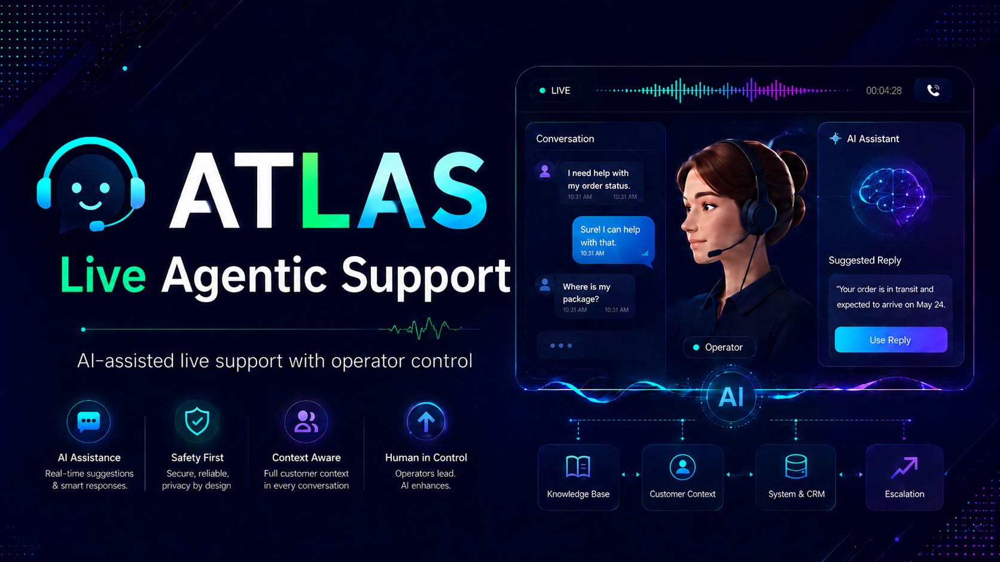

Conference-aware capture
PipeWire routes remote audio into local transcription and gives ATLAS a separate agent microphone, avoiding feedback into the call transcript.

Live Agentic Support
A local support agent that listens to live calls, recalls only the selected client's approved context, drafts practical answers, and speaks when you allow it.
Built for live support
ATLAS is not an unattended chatbot. It is an operator console for repeated support work where timing, context boundaries, and human judgment all matter.
PipeWire routes remote audio into local transcription and gives ATLAS a separate agent microphone, avoiding feedback into the call transcript.
Choose the response mode for the moment. Mute instantly, speak exact text, or take the microphone back without changing the client context.
Retrieve approved public knowledge and one explicitly selected client scope from local SQLite or Azure Data Explorer snapshots.
Global and client guardrails precede reference material. Restricted files, unsafe proposals, and cross-client routing fail closed.
Resolved sessions can produce evidence-backed knowledge proposals. Operators approve, reject, version, or retire what ATLAS learns.
Use local Qwen or an authenticated, stateless GitHub Copilot ACP bridge while the application retains control of routing and disclosure.
The live loop
ATLAS keeps latency low without hiding the control plane. Every response moves through a visible loop from audio to scoped context to a draft or authorized spoken reply.
Read the technical guideLocal Whisper converts the conference monitor into bounded transcript turns.
Public guardrails, client guardrails, and ranked recall are assembled by the application.
The selected model answers, asks for clarification, or recommends escalation.
Policy and mode determine whether the response waits, speaks, or stays silent.
Session evidence can become a versioned proposal, never an invisible memory write.
Client isolation
The operator chooses the knowledge database. Caller text and model output never choose or switch it.
Private URLs, credentials, regulated details, and unrelated client material stay outside the prompt unless the active scope and its guardrails explicitly allow them.
Voice profiles
Voice profiles guide phrasing and expression while the TTS bridge resolves an authorized local reference asset.
Calm operational authority for reliability work, incident clarity, practical remediation, and accountable next steps.
Warm, curious, and genuine. A thoughtful, knowledgeable friend who leads with the useful answer and speaks naturally.
Witty, playful company for conversational moments, with tasteful humor and the judgment not to force it into serious topics.
Local-first security
ATLAS treats database routes, workspace paths, sessions, guardrails, and speech authorization as application-controlled security boundaries.
Install
The bootstrap creates a durable local checkout, installs the atlas launcher and desktop entry, and checks the audio, voice, transcription, and Node.js prerequisites.
Linux · Node.js 24+ · PipeWire · Python 3.11+
curl -fsSL https://raw.githubusercontent.com/appatalks/atlas-agent/main/get-atlas.sh | bash
atlasATLAS’s portable memory, scoped recall, and reviewed knowledge patterns grow from technology developed in Eva, its voice-first sister project.